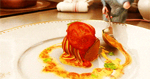
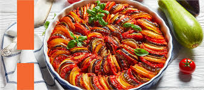
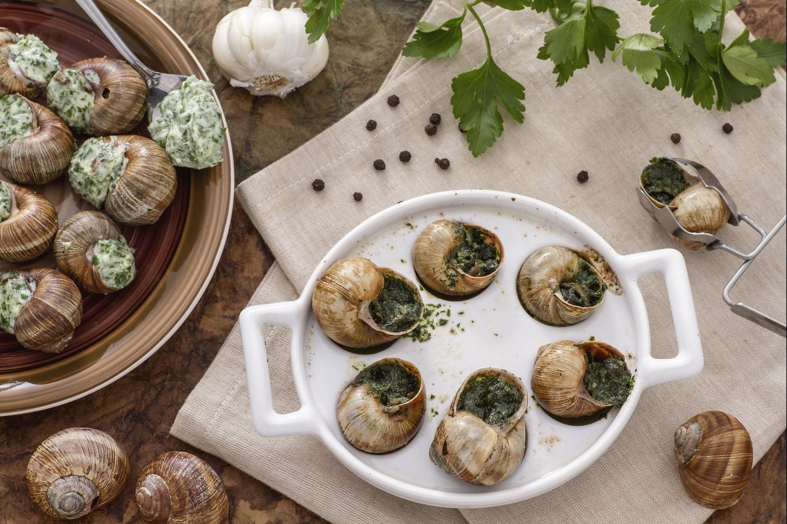
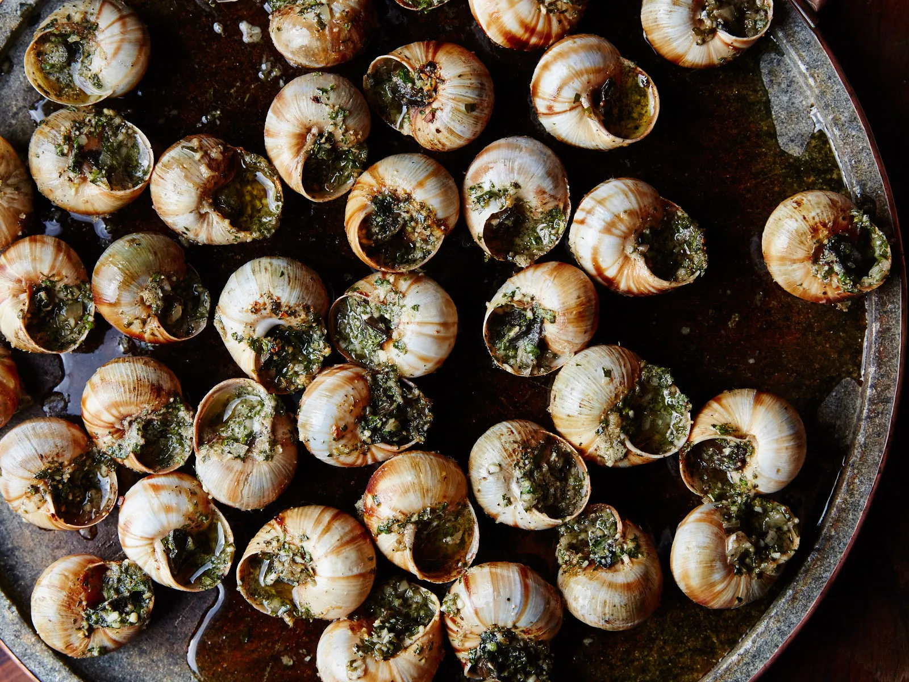
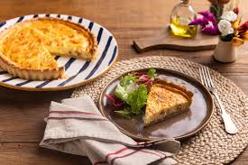
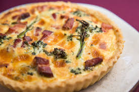

Pratos Famosos
Ratatouille
Uma receita campestre popular, o ratatouille é um ensopado de legumes de verão feito com abobrinhas, berinjelas, pimentões vermelhos e amarelos, tomates e cebolas, ao qual podem ser adicionados outros legumes. Essa especialidade tem origem na Provença, região do sudeste da França caracterizada por sua culinária mediterrânea, composta por ervas aromáticas e muitos legumes; o nome vem das palavras francesas rata, que indica um ensopado com pedaços inteiros, e touiller, que se refere ao ato de misturar os ingredientes. Este prato também é muito conhecido por ser mostrado em um dos filmes mais famosos da Pixar, Ratatouille.


Escargot
O escargot, caracol terrestre consumido há milênios, tem raízes na pré-história (Paleolítico) e era apreciado pelos romanos, que os criavam e alimentavam com leite. Popularizou-se na França como iguaria de luxo no século XIX, popularizado pelo chef Antonin Carême, evoluindo de comida de necessidade para prato sofisticado.


Quiche
A quiche é uma torta aberta francesa, com origens alemãs na região da Alsácia-Lorena (século XVI), composta por uma base de massa quebradiça (pâte brisée) recheada com uma mistura de ovos, creme de leite (nata) e, tradicionalmente, bacon (Quiche Lorraine). É extremamente versátil, servida quente, morna ou fria, sendo ideal para almoços, jantares, brunchs ou entradas.

